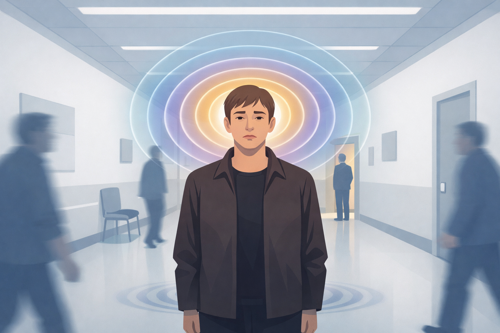

By Rustam Iuldashov
30 years lived experience with migraine · Sources: 20 peer-reviewed references including The Journal of Headache and Pain (n=130), Headache (n=2,991), Pain and Therapy (n=10,000+) · Last updated: March 27, 2026
Medical Note: This content is based on peer-reviewed research from The Journal of Headache and Pain, Headache, Pain and Therapy, Cephalalgia, Journal of Professional & Applied Psychology, and foundational works by van der Kolk, Maté, Seligman, Neff, White & Epston, and Frankl. The author is a patient advocate, not a licensed medical professional. Always consult your healthcare provider for medical concerns.
There Was No Name for It Yet
Thirty-eight years.
That is the longest documented gap between a person’s first migraine attack and their correct diagnosis.[2] Thirty-eight years of pain without a framework. Thirty-eight years of wrong treatments, wrong doctors, wrong explanations. A third of a lifetime spent in the dark.
I lived with migraine for thirty years before I understood what was happening inside my brain. The pain was not imaginary. But for a very long time, I had no language for it — and without language, I had no way to fight back.
Most people with migraine don’t.
The Numbers Behind the Silence
The diagnostic gap in migraine is not a rumor. It is measured, documented, and larger than almost anyone expects.
A study of 200 patients at a tertiary headache center found that fewer than 17% received a correct diagnosis within their first year of symptoms. Thirty percent waited one to five years. And 53.5% — more than half — went longer than five years.[1]
In cases where migraine was misdiagnosed as sinusitis, the average delay was nearly eight years. The longest: 38 years.[2] During that time, the misdiagnosed patients developed chronic migraine at significantly higher rates than those who were correctly identified — and medication overuse headache appeared only in the misdiagnosed group.[2] Wrong diagnosis doesn’t just delay treatment. It makes the disease worse.
Data from two large US migraine surveys showed that only 20–25% of people with chronic migraine ever receive a correct diagnosis at all.[3] In a hospital-based study of 100 migraine patients, 65 received an inappropriate diagnosis on their first medical visit. Ophthalmologists — one of the most common specialists people consult for migraine symptoms — achieved a perfect score: zero correct diagnoses.[4]
Migraine affects more than one billion people worldwide and ranks as the second greatest cause of years lost to disability globally.[5] The majority of people who have it don’t know it.
The Sinusitis Trap
The most common wrong answer is sinusitis. This is not surprising. It is the predictable result of how migraine actually works.
Migraine activates the trigeminal nerve system — the network connecting your brain to your sinuses, eyes, ears, teeth, and jaw.[6] When this system fires during an attack, the result is nasal congestion, facial pressure, and watery eyes that feel indistinguishable from a sinus infection. Migraine does not behave like a textbook headache. It mimics conditions it is not.
Studies are consistent: approximately 90% of people who believe they have sinus headaches are actually experiencing migraine.[7] In one landmark analysis of nearly 3,000 people who had never been diagnosed with migraine, 88% received a migraine diagnosis when evaluated correctly.[8]
The SAMS study — Sinus, Allergy, and Migraine Study — found that patients had seen an average of four physicians and waited an average of 25 years before receiving a correct diagnosis.[9]
Four doctors. Twenty-five years. Thirteen percent had undergone sinus surgery — an invasive procedure for a condition they didn’t have.[2] This is not a failure of patient intelligence. This is a failure of the diagnostic system.
Migraine has clear, validated diagnostic criteria — the ICHD-3, developed by the International Headache Society — that require no imaging, no blood test, no scan.[10] It is a clinical diagnosis. It needs only a trained clinician and a careful patient history. Yet in hospital-based studies, general physicians miss migraine in nearly 90% of cases. Neurologists miss it in 25%.[4]
“It’s All in Your Head”
The sinusitis trap is about confusion. What comes next is something uglier: dismissal.
More than four in five women report that their healthcare provider did not listen to them.[11] Women with migraine wait significantly longer for specialist referral than men — 32% wait more than twelve months to see a neurologist, compared to 20% of men. Nearly half see their GP five or more times before being referred, versus 27% of men.[11]
The word hysteria comes from the Greek hystera — uterus. For centuries, physicians believed that women’s unexplained symptoms arose from a wandering womb. Female hysteria remained a formal diagnostic category in the DSM until 1980.[12]
1980. Not the Middle Ages. Forty-five years ago.
These are the roots of assumptions that still shape clinical encounters today. Medical gaslighting — the dismissal, minimization, or contradiction of a patient’s reported experience — is not a rare event in migraine care. For many patients, it is the defining feature of the pre-diagnosis years.
The phrases are consistent across cultures. You have heard at least one of them:
- “You’re overreacting.”
- “The tests are normal, so you’re fine.”
- “This is probably just anxiety.”
- “You’d feel better if you lost some weight.”
- “Everyone gets headaches.”
When migraine leaves no visible lesion on an MRI, when it has no blood marker, when its severity cannot be confirmed by a machine — the burden of proof falls on the patient. And patients who are already in pain, already doubting themselves, already exhausted by years of unexplained suffering, often cannot carry that burden alone.
A 2024 systematic review documented seven consistent themes in women’s experiences of medical gaslighting: denial of symptoms, delayed diagnosis, negative clinical encounters, and gender bias.[13] Not outliers. Patterns.
⚠️ When to Seek Emergency Care
A new, sudden, severe headache — especially one described as “the worst headache of my life” — is not migraine until proven otherwise. This pattern can signal a subarachnoid hemorrhage or other serious neurological emergency.
- Headache that arrives with no warning and reaches maximum intensity within seconds
- Headache accompanied by fever, stiff neck, confusion, or vision loss
- Headache following a head injury
- Any headache that is fundamentally different from any you have had before
Seek emergency care immediately. Do not use this article to self-diagnose or delay emergency evaluation.

What the Body Does with Unacknowledged Pain
Here is what happens — physiologically, psychologically — when pain is real and chronically disbelieved.
Dr. Bessel van der Kolk spent decades studying what the body does when suffering is not witnessed. His central finding: the body remembers. Unprocessed pain — from external trauma or from repeated invalidation — reshapes the nervous system in measurable ways.[14] It keeps the brain on alert. It changes what the mind selects to pay attention to. It makes it difficult to feel safe, even in the absence of immediate danger.
Chronic undiagnosed migraine is, in a real sense, a trauma of dismissal.
Dr. Gabor Maté, physician and author of When the Body Says No, spent decades observing how medicine’s fundamental error — treating body and mind as separate systems — harms patients.[15] When physicians dismiss symptoms as psychosomatic without asking what is happening in the person’s whole life, they do not make the problem smaller. They make it invisible. And invisible problems grow.
The clinical evidence confirms this. Patients who remain undiagnosed longest are significantly more likely to develop chronic migraine.[2] They develop medication overuse headache, because without a correct framework, they reach for whatever blunts the pain.[2] Nearly 60% of migraine patients report a comorbid anxiety disorder, 50% report depression, and 25% report PTSD.[16] These are not coincidences. They are the documented residue of unwitnessed suffering, accumulated across years.
Martin Seligman’s foundational research on learned helplessness maps with painful precision onto the pre-diagnosis experience.[17] You try. It doesn’t help. You are told you are imagining things. You try again, differently. Still nothing. Eventually, you stop trying. The world contracts around the pain.
The Cost of Not Having a Name
Language does more than describe experience. It organizes it. It gives pain a location, a boundary, a category — and through that category, a community.
Without a name, migraine lives everywhere and nowhere. It bleeds into identity: I am weak. I cannot handle stress. I am difficult. It seeps into relationships — with partners, employers, friends who never quite believe how severe it is, partly because the sufferer themselves has been taught by the medical system to doubt it.
Kristin Neff’s research on self-compassion documents how chronic illness in the context of social invalidation deepens the inner critic.[18] The person who was told their pain was imaginary learns to tell themselves the same thing. Self-doubt becomes self-abandonment.
One of the most consistent observations after a correct migraine diagnosis is not only clinical improvement — it is the relief of recognition. “So I wasn’t making it up.” “There’s a reason.” “Other people have this.” Narrative therapy, developed by Michael White and David Epston, centers precisely this: naming an experience, separating it from your identity, and placing it inside a coherent story is itself a therapeutic act.[19]
Migraine is not you. Migraine is something that happens to you. Before the diagnosis, that distinction often doesn’t exist.
The Moment the Name Arrives
What changes when diagnosis finally comes?
Clinically: access to preventive treatment, evidence-based acute therapy, CGRP-targeting medications, behavioral interventions, a framework for management. Misdiagnosed patients receive none of this — and often receive treatments that make their condition worse.[2]
Psychologically: something equally essential.
Viktor Frankl wrote that humans can endure almost any what if they have a why.[20] A diagnosis does not end pain. But it ends the specific suffering of not knowing. It transforms an incomprehensible experience into a comprehensible one. It gives the pain a story — a before, a during, and a direction.
For me, after thirty years of migraine attacks I understood only as personal failures, the diagnosis was not a sentence. It was a structure. A framework inside which I could finally ask different questions.
Not: What is wrong with me?
But: What is happening to my brain, and what do we do about it?
That shift — from shame to inquiry — changes everything.
If You’re Still in the Before
If you are still living in those years before the name, the evidence offers something practical.
Migraine has no blood test and no scan. But it has specific, internationally validated diagnostic criteria that have been agreed upon by headache specialists for decades.[10] A correct diagnosis requires a thorough headache history and a clinician who applies those criteria. If your current provider dismisses your symptoms, you are not obligated to accept that dismissal.
Research is consistent: patients who track their symptoms in detail, who ask their clinician explicitly about migraine diagnostic criteria, and who seek specialist referral when needed — reach diagnosis sooner.[4] A headache specialist is significantly more likely to provide a correct diagnosis than a general practitioner or ophthalmologist.[4]
The most powerful tool you can bring to a medical appointment is not a description. It is data.
A documented log of your attack dates, duration, severity, accompanying symptoms, and potential triggers gives your doctor an objective record that is difficult to dismiss. This is precisely why I built Migraine Companion — to give people in this exact situation a structured diary they can place in front of any clinician and say: here is what has been happening to me.
You are not dramatic. You are not weak. You are not imagining it.
The pain is real. The neurology is real. The years before the name were real. And the possibility of a different future — correctly diagnosed, appropriately treated, connected to a community of people who understand — is real too.
Key Takeaways
- More than half of migraine patients wait over 5 years for a correct diagnosis; the average delay in sinusitis-misdiagnosis cases is nearly 8 years — with a documented maximum of 38 years.[1, 2]
- Approximately 90% of people diagnosed with “sinus headache” are actually experiencing migraine, caused by migraine’s neurological effect on the trigeminal system.[7, 8]
- Gender bias in healthcare is documented and persistent: women wait significantly longer for referral and are dismissed at higher rates than men.[11, 13]
- Chronic undiagnosed pain reshapes the nervous system and fuels comorbid anxiety, depression, and PTSD — the psychological cost of years without a name is clinically measurable.[14, 16]
- Receiving a correct diagnosis is not just a clinical milestone — it is a psychological turning point that separates pain from identity.[19, 20]
- Detailed symptom tracking, self-advocacy, and specialist referral are the most evidence-based tools for shortening the path to diagnosis.[4]
⚕️ Important Medical Disclaimer
This article is for informational and educational purposes only and does not constitute medical advice, diagnosis, or treatment. The author, Rustam Iuldashov, is not a licensed physician, neurologist, or healthcare professional. He is a patient advocate with 30 years of personal experience living with chronic migraine.
All clinical claims in this article are sourced from peer-reviewed research published in indexed medical journals. Study designs and sample sizes are noted where applicable.
Always consult a qualified healthcare provider for questions about your individual health, migraine treatment, or medication decisions. If you believe you may be experiencing migraine and have not yet received a diagnosis, seek evaluation from a neurologist or certified headache specialist.
This content was last reviewed for accuracy on March 2026.
References
- Viticchi G, Falsetti L, Paolucci M, et al. “Time Delay From Onset to Diagnosis of Migraine.” Headache, 51:232–236 (2011). doi:10.1111/j.1526-4610.2010.01778.x. Study design: cross-sectional. n=200.
- Al-Hashel JY, Ahmed SF, Alroughani R, Goadsby PJ. “Migraine misdiagnosis as a sinusitis, a delay that can last for many years.” The Journal of Headache and Pain, 14:97 (2013). doi:10.1186/1129-2377-14-97. Study design: retrospective cross-sectional. n=130.
- Viana M, et al. “Practical Insights on the Identification and Management of Patients with Chronic Migraine.” Pain and Therapy, 11:1–14 (2022). doi:10.1007/s40122-022-00387-9. Study design: population-based data review (CaMEO + AMPPS). n=~10,000+.
- Patel ZM, et al. “Factors associated with delayed diagnosis of migraine.” Annals of Indian Academy of Neurology (2019). doi:10.4103/aian.AIAN_418_18. Study design: hospital-based cross-sectional. n=100.
- Steiner TJ, et al. “Migraine: the seventh disabler.” The Journal of Headache and Pain, 14:1 (2013). doi:10.1186/1129-2377-14-1. Study design: global burden review.
- Cady RK, Schreiber CP. “Sinus headache or migraine? Considerations in making a differential diagnosis.” Neurology, 58(Suppl 6):S10–S14 (2002). doi:10.1212/WNL.58.90060.S10. Study design: clinical review.
- Mayo Clinic Health System. “Sinus headache: Not what you think.” Clinical reference, 2024. mayoclinichealthsystem.org.
- Eross E, Dodick D, Eross M. “The Sinus, Allergy and Migraine Study (SAMS).” Headache, 47(2):213–224 (2007). doi:10.1111/j.1526-4610.2006.00688.x. Study design: prospective observational. n=2,991.
- Eross E, et al. SAMS study. Average delay 25.3 years. doi:10.1111/j.1526-4610.2006.00688.x. n=100.
- Headache Classification Committee of the International Headache Society. “The International Classification of Headache Disorders, 3rd edition.” Cephalalgia, 38(1):1–211 (2018). doi:10.1177/0333102417738202.
- Inizio Evoke / UCL Faculty of Brain Sciences. “It’s not all in her head: Addressing gender bias within neurology.” Clinical review, 2025. inizioevoke.com.
- Northwell Health / Katz Institute for Women’s Health. “Gaslighting in women’s health: No, it’s not just in your head.” Clinical review, 2023. northwell.edu.
- Shahbaz Z, et al. “Psychological Impact of Medical Gaslighting on Women: A Systematic Review.” Journal of Professional & Applied Psychology, 5(1) (2024). Study design: systematic review. n=10 studies.
- Van der Kolk BA. The Body Keeps the Score: Brain, Mind, and Body in the Healing of Trauma. Penguin Books, 2014. ISBN: 9780143127741.
- Maté G. When the Body Says No: The Cost of Hidden Stress. Knopf Canada, 2003. ISBN: 9780676973129.
- American Migraine Foundation. “The Relationship Between Migraine and Mental Health.” Survey reference, 2023. americanmigrainefoundation.org. n=~1,000+.
- Seligman MEP. Helplessness: On Depression, Development, and Death. W.H. Freeman, 1975.
- Neff KD. Self-Compassion: The Proven Power of Being Kind to Yourself. William Morrow, 2011. ISBN: 9780061733529.
- White M, Epston D. Narrative Means to Therapeutic Ends. W.W. Norton, 1990.
- Frankl VE. Man’s Search for Meaning. Beacon Press, 2006. ISBN: 9780807014295.

How We Create Content
- Peer-reviewed sources only. This article cites The Journal of Headache and Pain, Headache, Pain and Therapy, Cephalalgia, Neurology, Journal of Professional & Applied Psychology, and foundational works in psychology and narrative therapy.
- Study transparency. Study design and sample sizes noted for all clinical references.
- Source verification. All claims backed by numbered references with DOI links.
- Experience + Science. 30 years personal migraine experience combined with peer-reviewed evidence.
- Regular updates. Articles reviewed when significant new research emerges.
- No conflicts of interest. No pharmaceutical funding. No supplement partnerships. No sponsored content.
Your Symptoms Are Data. Make Them Visible.
The most effective thing you can bring to a doctor’s appointment is not a description — it is a record. Migraine Companion helps you log attacks, track patterns, and build the objective evidence that gets you taken seriously. Built by someone who spent 30 years without a name for the pain.
Last reviewed: March 2026
Next scheduled review: September 2026